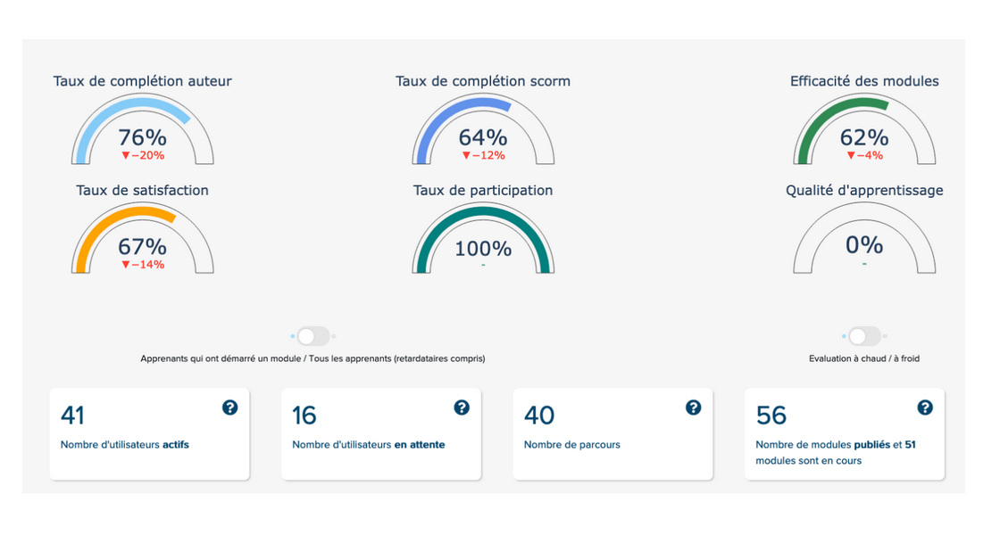
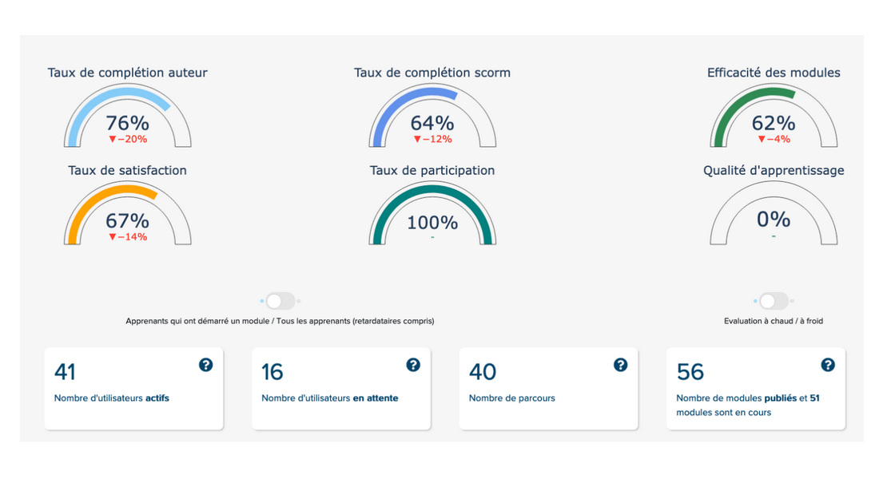

Learning analytics
Dataviz - Analyze and understand learners' interactions with the xAPI (Experience API) standard
xAPI Dash DockerProject Overview
This project focuses on developing a data visualization dashboard using Dash, a Python framework, to analyze and display learning data collected from EdMill, a proprietary Learning Management System (LMS) developed by My-Serious-Game.
Context
Modern e-learning platforms continuously collect valuable data as learners progress through educational modules. These interactions, often captured using the Experience API (xAPI) standard, offer deep insights into learner behavior.
Our clients are increasingly seeking to better understand how learners engage with their training content. They want to:
- Identify usage patterns and learning trends
- Measure engagement, completion and success rates
- Gain actionable insights to improve communication strategies and instructional design
Solution
To meet this need, we built an interactive dashboard application with Dash, which provides a modern and responsive UI. The app was containerized, using Docker Compose, making it easy to deploy and maintain across different systems or cloud platforms.
Key Features
- Interactive Graphs & Tables : Visualize key learning metrics such as module completion rates, time spent, quiz performance, and user engagement over time.
- Filters and dynamic views : Analyze data by user group, module, time range, or specific learning objectives.
- Real-time Data Rendering : Update visuals dynamically as new xAPI events are collected.
- User-Centered Design : Designed for clarity and usability, ensuring that non-technical users can easily extract insights.
Conclusion
This project illustrates how data visualization with Dash can unlock the full potential of learning data. By transforming raw xAPI events into clear and actionable insights, we provide our clients with a powerful tool to improve learner engagement and success.
Screenshots :
 
